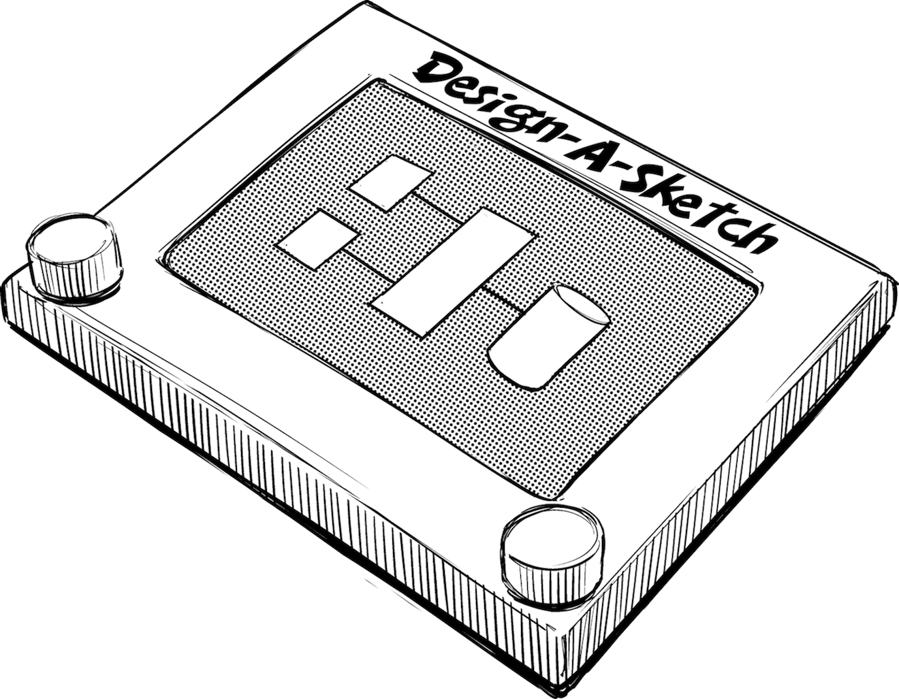
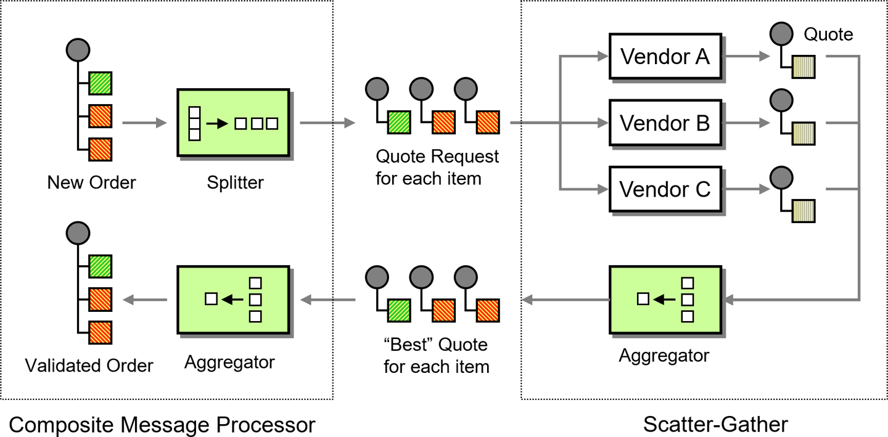
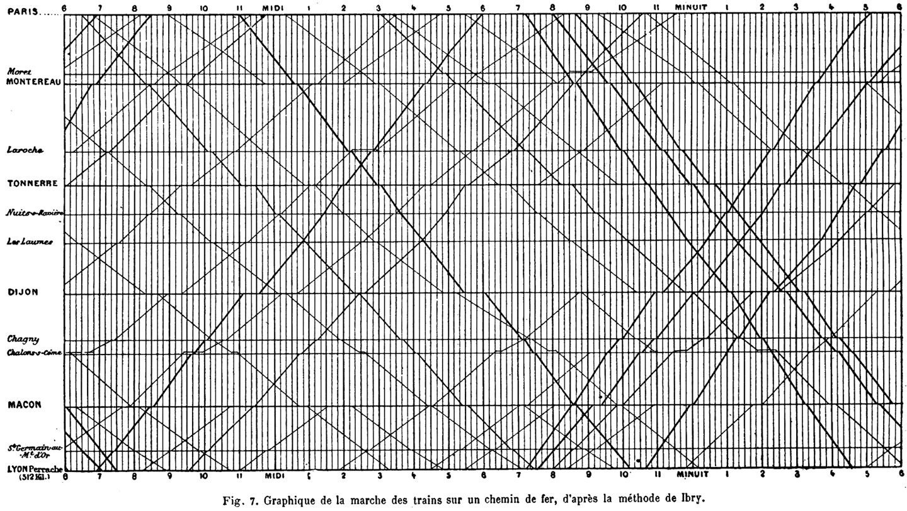

Cheating in a Picture Is Much Harder Than Cheating in Words

Some years ago, the Crested Butte Enterprise Architecture Summit once again proved that sticking a bunch of geeks in a remote town can lead to creative results. In our case, the result was an A-to-Z list of 26 new development strategies, starting from activity-driven development (ADD) and ending on zero-defect development (ZDD). Domain-driven design (DDD) was dedicated to Eric Evans’s fantastic book Domain-Driven Design.1 However, another “DDD” sprang to mind: diagram-driven design, and it turned out that there’s actually a serious idea behind the fun exercise.
While working for Google in Japan, I created and taught a class on presentation skills for engineers, which included some common ideas of using strong, impactful visuals inspired by books like Presentation Zen.2 Following my own advice equipped me with high-resolution graphics of confident managers, fuel gauges indicating that your mileage may indeed vary, shoes that apparently do not fit all, and so on. Still, however impactful fancy graphics may be, for most technical presentations a wide stance, deep voice, and Steve Jobs–like hand gestures (turtleneck optional) are unlikely to teach the audience how a multicloud strategy increases your system architecture complexity.
Instead, you need “meat”: what design alternatives did the team have? How do they differ? What design principles made you choose one over the other? What are the main building blocks of the systems and how do they interact (Chapter 23)? How did you track down that performance bottleneck and what did you learn from it? When Garr Reynolds, the author of Presentation Zen, came to Google to talk about his book, he acknowledged that technical discussions often require detailed diagrams or even snippets of source code. He suggested to provide those as a handout instead of including it in the presentation to make it easier for the audience to read and digest them. Still, most technical presentations I see do contain source code or diagrams to explain technical concepts in detail, so we’d better figure out how to do so effectively.
Ed Tufte already ran bullet points through the grinder by blaming them for the inaction that led to the Space Shuttle Columbia disaster3 upon re-entry (and he might not be wrong judging from the slides they put together). “Death by PowerPoint” was immortalized by a Dilbert comic strip as early as 2000. You can’t fit a lot of source code on a slide either, especially if you are using a verbose language with checked exceptions. That leaves you with diagrams as your main communication vehicle for technical concepts.
Back at Crested Butte, we looked at our list and pondered whether some of our concoctions actually had meaning. Interestingly, as we discussed how to draw meaningful diagrams in a later session, I highlighted the importance of a consistent visual vocabulary, which would omit unnecessary details but highlight the essence of the design decisions (Chapter 8). During this discussion, we realized that to draw a good picture, you need to have a decent design in the first place. If reality is completely convoluted, it’s hard to depict order in retrospect. Taking this thought a step further, we realized that good diagramming contributes to good system design in general. Diagram-driven design had become a reality!
When talking about diagram-driven design, I don’t imply that we’d generate code from UML diagrams. I am pretty firmly rooted in Martin Fowler’s UML as Sketch4 camp, meaning UML is a picture to aid human comprehension, not a programming language or specification. If people don’t quite agree, I refer to Grady Booch, who as co-creator of the UML remarked that “The UML was never intended to be a programming language.”5 Instead, I am talking about a picture that conveys important concepts—the proverbial big picture that does not get caught up in irrelevant details.
An excellent example of designing with diagrams is the book Enterprise Integration Patterns coauthored by Bobby Woolf and myself in 2003. The book defines a pattern language for designing asynchronous messaging solutions, which is represented both in text form and as a set of icons. The consistent visual style and the simple composition model of messaging solutions allows the visual language to become a design tool, as shown in the illustration from the book (Figure 22-1).

The resulting diagrams aren’t just illustrations but also help validate the design. For example, the visual language reminds you that for every splitting or distribution of messages, you need to aggregate them back later. It also validates a logical grouping of the elements.
One great historical example of diagram-driven design are the graphical train schedules created to plot trains’ paths along two axes by distance (vertical) and time (horizontal). The faster a train moves, the steeper the line will drop. The lines on such charts intersect where trains running in opposing directions pass each other (see Figure 22-2). On a single-track railroad, you’d want to make sure that these occur at a station where there are two tracks and platforms. Having the train schedules laid out visually is a great design aid.
Well-known examples of these maps go back to Étienne-Jules Marey and his book La Méthode Graphique (1878). They are also featured prominently in Tufte’s The Visual Display of Quantitative Information,6 perhaps the standard text on charting and diagramming.

Once you embrace diagramming as a design technique, you’ll find several connections between good visual design and good system design, which we examine in the following sections.
Good diagrams use a consistent visual language. A box means something (for example, a component, a class, a process), a solid line something else (maybe a build dependency, data flow, or an HTTP request), and a dashed line means something else yet. No, you don’t need a Meta-Object Facility and correctness-proven semantics, but you need to have an idea what element or relationship you are depicting how. Picking this visual vocabulary is important to define the architectural viewpoint you are going to concern yourself with, such as source code dependencies, runtime dependencies, call trees, or allocation of processes to machines.
Good design is often tied to the ability to think in abstractions. Diagrams are visual abstractions and can be instrumental in this process.
One of the most frequent problems I encounter in technical documents is a wild mix of different levels of abstraction (the same problem can be found in source code). For example, the way configuration data affects a system’s behavior can be described like this:
The system configuration is stored in an XML file, whose “timetravel” entry can be set to either
trueorfalse. The file is read from the local filesystem or alternatively from the network, but then you need NFS access or to have Samba installed. It uses a SAX parser to avoid building the whole DOM tree in memory. The “Config” class, which reads these settings, is a singleton because…
In these few sentences you learn about the file format, project design decisions, implementation detail, performance optimizations, and more. It’s rather unlikely that a single reader is actually interested in this smörgåsbord of facts.
Now try to draw a picture of this paragraph! It will be nearly impossible to get all of these concepts onto a single sheet of paper.
Drawing a diagram thus forces us to clean up our thinking by considering one level of abstraction at a time. While drawing a picture doesn’t automagically make the problem of mixing abstractions disappear, it puts it in your face much more bluntly than a meandering chain of prose, which from afar might not look all that bad. A well-known German proverb proclaims that Papier ist geduldig (“paper is patient”), meaning paper is unlikely to object to what garbage you scribble on it. Diagrams are a little less patient. If you do compare architecture diagrams to modern art, you’ll want the Mondrian, not the Pollock.
Billboard-sized database schema posters, which include every single table, stick to a single level of abstraction but are still fairly useless because they try to convey reality without placing an emphasis (Chapter 21). When shrunken down to fit on a single presentation slide, they start to look like abstract art—something better placed in the museum than in architecture documentation.
Therefore, omit unimportant detail to concentrate on what’s most relevant! The same is true for system design: it’s important to know “what kind of thing” your system is; for example, by defining a system metaphor (Chapter 24).
Limiting the levels of abstraction and scope does not yet guarantee a useful diagram. Good diagrams lay out important entities such that they are logically grouped, relationships become naturally clear, and an overall balance and harmony emerges. If such a balance doesn’t emerge, it may just be that your system doesn’t have one.
I once reviewed a relatively small module of code that consisted of a rather entangled mess of classes and relationships. When the developer and I tried to document this module, we just couldn’t come up with a half-decent way to sketch what was going on. After a lot of drawing and erasing we came up with a picture that vaguely resembled a data-processing pipeline. We subsequently refactored the entangled code to match this new system metaphor. It improved the structure and testability of the code significantly, thanks to diagram-driven design!
A well-balanced diagram will show coupling, cohesion, and a high-level structure, concepts that equally help with good system design.
When looking at a piece of code, you can always figure out what was done, but it’s much harder to understand why it was done. It can be even more difficult to understand which decisions were made consciously and which ones simply happened.
When creating diagrams, you have more tools at hand to express these nuances, so you should use them. For example, you can use a hand-drawn sketch to convey that your design is merely a basis for discussion. Once you have full agreement and want to convey that every detail is critical, you can use a visual style that resembles an engineering blueprint. Many books, including Eric Evans’s, use this technique effectively. That’s also the reason this book uses sketches: we are discussing architecture approaches and ways of thinking, not concrete tools and processes.
When drawing, consider the precision versus accuracy dilemma: “next week it will be roughly 15.235 degrees” doesn’t make sense as it’s precise but inaccurate. Don’t make precise-looking slides if you know they aren’t accurate.
Diagrams can (and should) be beautiful—little works of art, even. I am a firm believer that system design has a close relationship to art and (nontechnical) design. Both visual and technical design start with a blank slate and virtually unlimited possibilities. Decisions are often influenced by multiple, usually conflicting, forces. Good design resolves these forces to create a functional solution, which attains a good balance and some degree of beauty. This may explain why many of my friends who are great (software) designers and architects have an artistic vein or at least interest.
Not all diagrams are useful as a design technique. Drawing a messy picture won’t make your poor design any better. Beautiful marchitecture diagrams,7 which have little to do with the actual system being built, are also of limited value. In technical discussions, though, I have observed many occasions for which drawing a good diagram has greatly improved the conversation and the resulting design decisions. If you are unable to draw a good diagram (and it isn’t due to lack of skill), it might just be because your actual system structure is not what it should be.
1 Eric Evans, Domain-Driven Design: Tackling Complexity in the Heart of Software (Upper Saddle River, NJ: Addison-Wesley, 2003).
2 Garr Reynolds, Presentation Zen: Simple Ideas on Presentation Design and Delivery, 3rd ed. (New Riders, 2019).
3 Edward Tufte, “PowerPoint Does Rocket Science: and Better Techniques for Technical Reports,” EdwardTufte.com, https://oreil.ly/kDihX.
4 Martin Fowler, “UML as Sketch,” MartinFowler.com, https://oreil.ly/WLUgR.
5 Mark Collins-Cope, “Interview with Grady Booch,” Objective View Magazine, Issue 12, Sept. 12, 2014, https://oreil.ly/HGc5j.
6 Edward R. Tufte, The Visual Display of Quantitative Information (Cheshire, CT: Graphics Press, 2001).
7 Marchitecture denotes marketing pictures disguised as architecture.